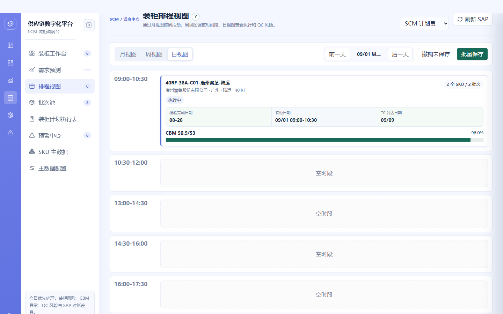
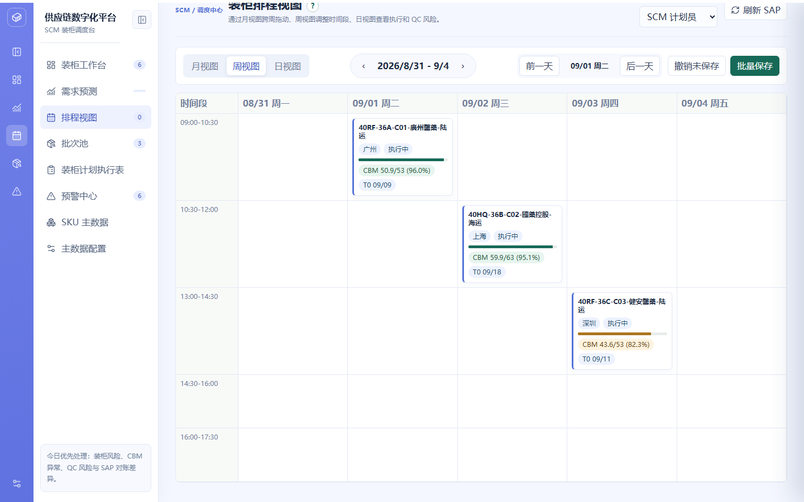
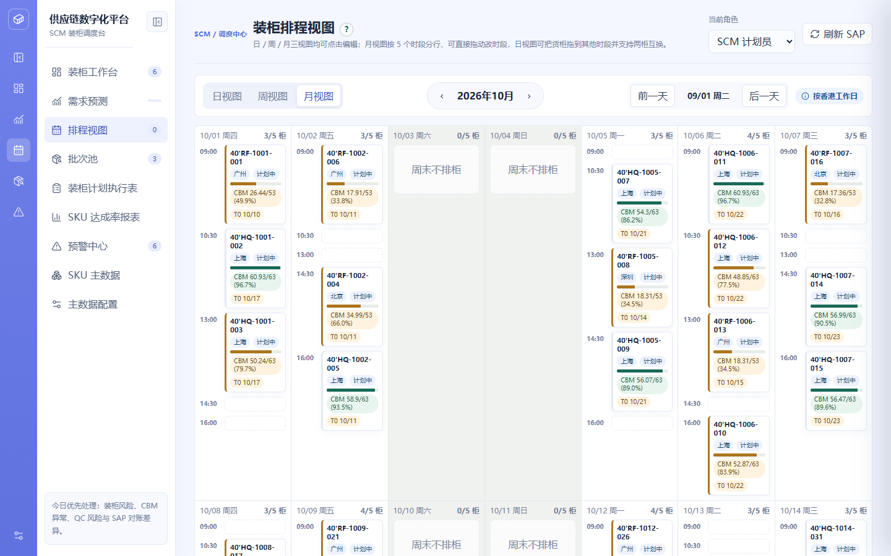
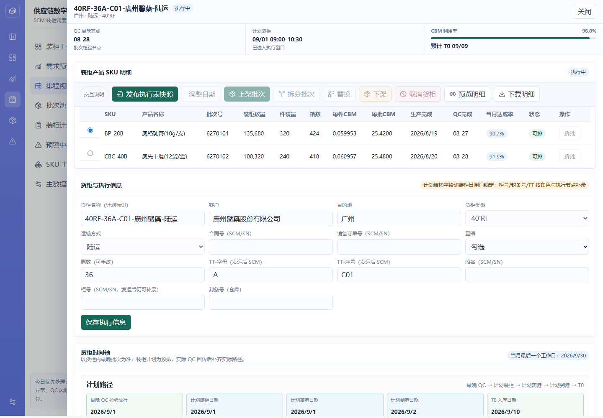
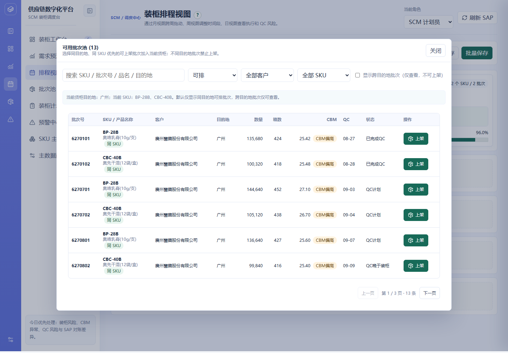
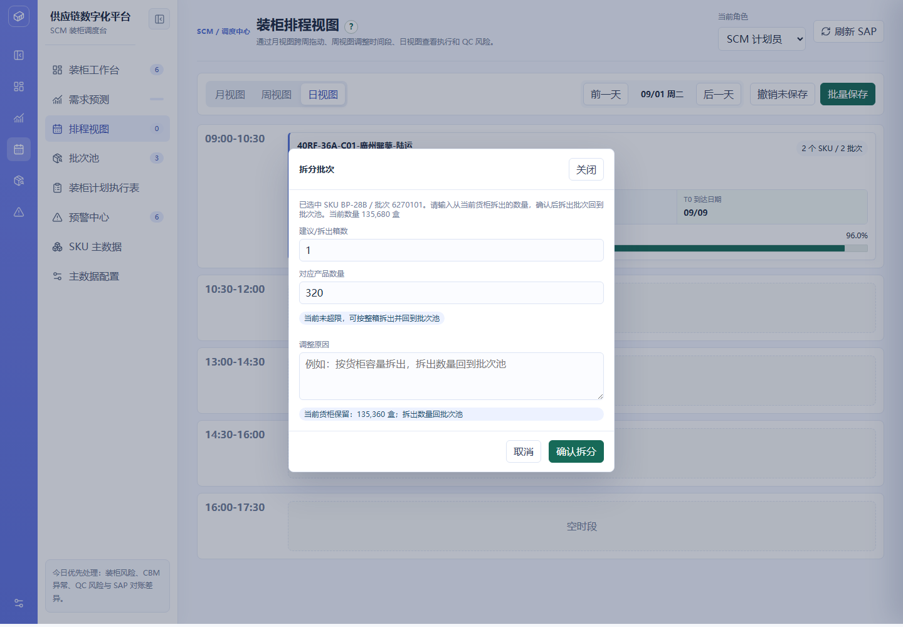
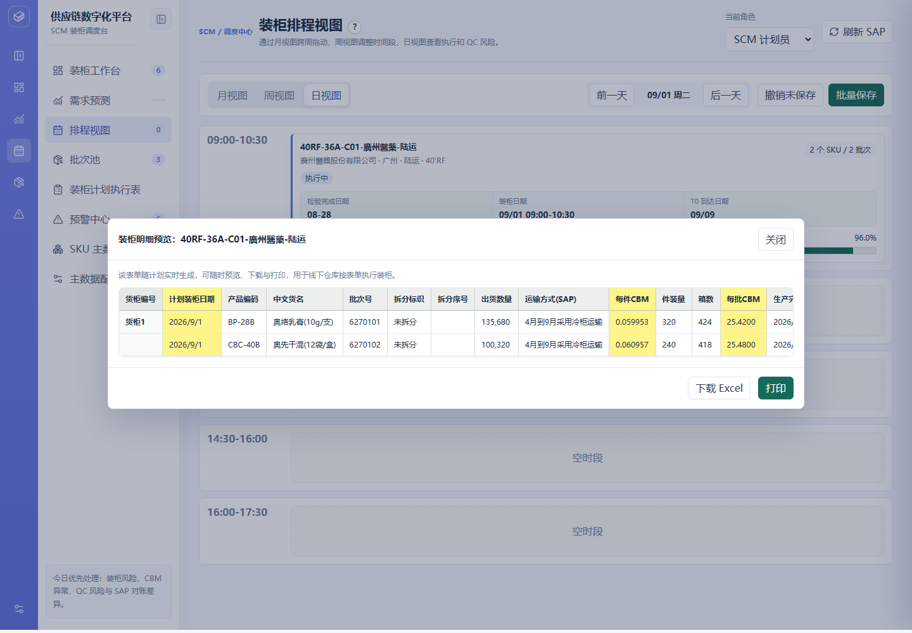

| 项目名称 | 供应链协同平台 | 模块 | 装柜排程 |
|---|---|---|---|
| 需求名称 | 排程视图（含货柜编辑与上下架） | 负责人 | SCM 产品线 |
| 文档版本 | V1.5 | 状态 | 已确认 |
| 更新日期 | 2026-09-21 | 关联原型 | supply-chain-prototype.html（排程视图页 / 货柜编辑抽屉） |
| 版本 | 日期 | 变更说明 | 作者 |
|---|---|---|---|
| V1.0 | 2026-09-08 | 初版：月/周/日三视图、跨周拖动改期、每日装柜上限、未保存调整管理、日期链与香港工作天规则 | SCM 产品线 |
| V1.1 | 2026-09-08 | 补充编辑层：当日编辑链路、货柜详情抽屉（字段/操作/执行信息）、上架/下架/替换、拆批、装柜明细预览与下载、货柜状态机与权限矩阵、上下架业务规则 | SCM 产品线 |
| V1.2 | 2026-09-20 | 日视图为默认视图并排首位；移除「批量保存」与「未保存调整管理」，编辑即时生效；工具栏改为常驻「按香港工作日」说明标签；货柜编辑抽屉移除 6 个按钮（发布执行表快照 / 调整日期 / 替换 / 预览明细 / 下载明细 / 授权变更）；日视图新增「新增货柜」入口与「新增货柜」弹窗，支持在空时段直接新建货柜排柜；同步更新操作按钮矩阵、埋点与状态机 | SCM 产品线 |
| V1.3 | 2026-09-18 | 需求规范：新增「单日单时段仅支持 1 个货柜」硬约束——日视图每时段仅渲染 1 个货柜卡片（占用后「新增货柜」置灰为「该时段已占用」）；拖拽落位前校验目标「日期 + 时段」唯一性并拦截；「新增货柜」弹窗时段下拉对已占用时段标注「（已占用）」置灰不可选；补时段唯一性术语、异常边界与文案规范 | SCM 产品线 |
| V1.4 | 2026-09-18 | 交互增强：① 周视图 / 月视图的货柜卡片支持点击打开货柜编辑抽屉（与日视图能力一致，可直接编辑），拖拽与点击通过「拖拽标记」区分互不冲突；② 拖拽落位到已占用时段时不再拦截，改为自动顺延到同日下一个空闲时段，同日 5 时段全满时顺延到后续日期，并 toast 提示实际落位结果，用户可再经周/月视图调整；③ 货柜时间轴「实际路径」行字段规范为「实际装柜日期 / 实际离港日期 / 实际到港日期 / T0 入库日期」（原复用计划口径），未回传节点显示「待回传」 | SCM 产品线 |
| V1.5 | 2026-09-21 | 视图与状态口径增强：① 月视图日期格内改为按 5 个装柜时段分行——行首显示时段，货柜卡片落在所属时段行，日内直接上下拖动即可改时段，空格行作为拖放目标；② 日视图支持拖动货柜改时段——拖到已占用时段时两个货柜互换时段（月 / 周视图仍保持自动顺延）；③ 货柜内批次「状态」列口径改为 SAP 状态（非限制 / 冻结），取自批次池同步的 SAP 回传值 | SCM 产品线 |
排程视图是 SCM 计划员在装柜计划里「把货柜排到具体日期与时段」的核心工作台。原流程中排程调整分散在不同入口，缺少统一的三视图视角。当前需收敛四点：日视图为默认视图并处理执行、QC 风险与货柜新建，周视图核对排柜顺序，月视图跨周拖动改期；每日装柜数量受上限约束（默认 5 柜，可配置）；所有排柜与编辑操作即时生效（不再设「未保存 / 批量保存」中间态）；日期链按「检验·装柜=香港工作天，离港·运输=自然日，T0=内地工作天」分别顺推，PV/CV 特殊批次默认加 3 个工作日；排程视图整体按香港工作日展示，法定节假日与周末不排柜（按规则内置，不需在前端维护日历）。
视图层之外，货柜的高频编辑动作（改日期、上下架批次、拆批、替换、明细导出）收敛在「货柜编辑抽屉」完成。核心原则：装柜数量不能直接输入，只能通过上架、拆批、替换和下架改变；跨客户、跨目的地混装在操作点直接阻断，而非事后预警。
排程视图的端到端流程见下方流程图（独立文件），关键分支为「视图选择（默认日视图）」「新增货柜排柜」「每日上限 / 香港工作日校验」「权限拦截」。
下图为现有系统「排程视图」页面的真实运行截图（供应链数字化平台），依次为日视图（默认）、周视图、月视图。日视图每个时段底部提供「新增货柜」入口；月视图日期格内按 5 个装柜时段分行展示，行首为时段。



点击任一视图（日 / 周 / 月）的货柜卡片后打开的「货柜编辑抽屉」（含操作栏、SKU 明细、货柜与执行信息、货柜时间轴）：

抽屉内「上架批次」打开的可用批次池（同目的地、同 SKU 优先排序，跨目的地禁止上架）：

「拆分批次」弹窗（整箱为最小单位，CBM 超限时给出最少移出建议）：

「预览明细」弹窗（装柜明细 26 列实时预览，支持下载 Excel 与打印）：

| 一级模块 | 二级功能 | 原型 | 描述 |
|---|---|---|---|
| 装柜排程 | 视图切换 |
【页面元素】顶部工具栏含「日视图 / 周视图 / 月视图」三个 Tab（日视图为默认且排首位）；月视图显示「‹ 2026年9月 ›」周期切换器，周视图显示「‹ 第36周 ›」，日视图显示「前一天 / 09/01 周二 / 后一天」切换器；工具栏右侧为常驻说明标签「按香港工作日」（悬浮提示：排程视图按香港工作日展示，法定节假日与周末不排柜），原「撤销未保存」「批量保存」按钮已移除。 【交互说明】点日/周/月 Tab → 对应视图显示，周期切换器随视图联动显隐；月视图用 ‹› 按月翻页，周视图按周翻页，日视图按天翻页。 【功能逻辑】三视图共用同一份货柜数据，切换仅改变展示维度；日/周/月三视图的货柜卡片均可点击打开编辑抽屉，编辑能力一致；三视图均支持拖拽调整装柜位置——月视图在日期格内按时段分行，可上下拖动改时段；周视图在「时段 × 工作日」矩阵内改期改时段；日视图可拖动货柜改时段。所有调整即时生效，无中间未保存态。 【数据与内容规则】日期范围覆盖当月起 30 天；装柜时段为可配置项（在主数据配置中维护，可新增、编辑、停用），示例默认值为 09:00-10:30、10:30-12:00、13:00-14:30、14:30-16:00、16:00-17:30。 |
|
| 日视图 |
【页面元素】按时段纵向列出当日各时段的货柜卡片；货柜卡片展示货柜编号、客户、目的地、运输方式、SKU 数量、CBM、QC 摘要与预计 T0。每个时段底部提供「新增货柜」按钮（虚线框样式）。 【交互说明】点击货柜卡片 → 打开货柜编辑抽屉；拖动货柜到另一时段 → 改时段；若目标时段已被占用，则与该时段货柜互换时段，并 toast 提示互换结果；点时段内「新增货柜」→ 打开「新增货柜」弹窗，填写后新建货柜并直接进入该货柜的编辑抽屉；前后一天切换 → 刷新当日时段列表与工作台。 【功能逻辑】日视图是 SCM 处理货柜的主入口，用于查看执行情况、QC 风险与新建货柜排柜；QC 未完成或晚于装柜的货柜以预警标识提示。 【边界说明】某时段无货柜时显示「空时段」占位；已被占用的时段仅展示 1 个货柜卡片，「新增货柜」按钮置灰为「该时段已占用」；若历史数据出现同「日期 + 时段」多柜，日视图仅展示首个货柜并给出该时段另有 N 个货柜与「单日单时段仅 1 柜」规则冲突提示条；周末或法定节假日（非工作日）时段顶部显示「（非工作日，不可排柜）」且「新增货柜」按钮置灰不可点；把货柜拖回其原时段视为无操作，不产生任何变更。 |
||
| 周视图 |
【页面元素】「时间段 × 工作日」矩阵：首列为时段，其余列为周一至周五（共 5 个工作日），交叉单元格放置对应日期与时段的货柜。 【交互说明】拖拽货柜到目标日期/时段单元格 → 完成改期；点击货柜卡片 → 打开货柜编辑抽屉；按周翻页查看不同周的排柜。 【功能逻辑】周视图用于核对排柜顺序与负载分布；点击货柜卡片可打开编辑抽屉（与日视图一致），拖动改期即时生效（按香港工作日校验）；不提供「新增货柜」入口。 【数据与内容规则】工作日以周一至周五为列；周末不显示在周矩阵中。 |
||
| 月视图（跨周拖动 / 点击编辑） |
【页面元素】月历网格：每个日期格显示「日期 + 星期 + 已排数/上限」，格内按 5 个装柜时段分行——每行行首为时段短标签（09:00、10:30、13:00、14:30、16:00，悬浮显示完整区间），行体是该时段的拖放目标，货柜卡片落在所属时段行；空格行以虚线占位；周末格显示「周末不排柜」占位。 【交互说明】拖拽货柜卡片到其他日期格或同一日期的其他时段行 → 改期 / 改时段；点击货柜卡片 → 打开货柜编辑抽屉；拖到周末格不响应；目标时段已占用时自动顺延到同日下一空闲时段并 toast 提示；超限日期格以红框标识。 【功能逻辑】月视图用于跨周调整装柜节奏，并在日内直接调整时段——时段分行后上下拖动卡片即可改时段，无需切到周视图；日期格头部实时显示「已排货柜数/每日上限」，超过上限显示超限样式；仅香港工作日可放置货柜。 【边界说明】月视图可浏览、可直接拖动改期与改时段，点开卡片后的编辑能力与日视图一致；未排柜的时段行以虚线占位表示可放置。 |
||
| 拖拽改期与每日上限 |
【功能逻辑】拖拽落位时即时写入新日期 / 时段，并前置校验目标时段唯一性（单日单时段仅支持 1 柜）：月 / 周视图下若目标「日期 + 时段」已有在排货柜，则自动顺延到同日下一个空闲时段并 toast 提示实际落位结果；日视图下则与该时段货柜互换时段。落位通过后仍校验每日装柜上限（默认 5 柜，等于主数据中已启用的装柜时段数），超过则提示「当日已排 N 柜，超过每日上限 5 柜，请改期或申请扩容」。 【边界说明】香港工作日之外的日期（周末、法定节假日）落位被阻止；无权限（非 SCM 计划员或计划已锁定）时拖拽不响应并提示；月 / 周视图目标时段已被占用时自动顺延到同日下一个空闲时段（同日 5 时段全满则顺延到后续工作日）并 toast 提示，未来时段全部排满时才提示无法自动顺延；日视图目标时段已被占用时两柜互换时段（互换为原子操作，货柜总数与被占用时段集合守恒、不产生重复占用）；拖回原时段视为无操作。 【前置条件与权限】每日上限由装柜日程主数据中「已启用的装柜时段数量」决定，默认 5 柜，时段启停后自动生效；时段唯一性规则为硬约束，任意角色均不可绕过。 |
||
| 新增货柜排柜 |
【页面元素】日视图每个工作日的时段底部「新增货柜」按钮；点击后打开「新增货柜」弹窗，含字段：客户、目的地、运输方式、柜型、计划装柜日期（只读，取自所选日期）、装柜时段（默认取自所选时段）、每日上限提示（只读）、T0 预计离港日期（只读，按日期链推算），底部按钮「取消 / 创建货柜」。 【交互说明】点「新增货柜」→ 弹窗带入所选日期与时段 → 选择客户与目的地后点「创建货柜」→ 生成新货柜编号并直接打开该货柜的编辑抽屉，供继续上架批次、维护执行信息；点「取消」或点击遮罩 → 关闭弹窗不创建。 【功能逻辑】创建时校验：客户与时段必填；目标时段唯一性——若所选「日期 + 时段」已有在排货柜，拦截并提示「MM/DD 时段 已排货柜 XXX，单日单时段仅支持 1 个货柜，请更换时段」；当日已排货柜数未超每日上限（超限则提示改期或申请扩容）；货柜编号按「前缀-序号」规则自动生成且唯一；创建后即时生效并写入操作日志；随后可在抽屉中上架批次。 【边界说明】非工作日（周末 / 法定节假日）不提供新增入口，按钮置灰；目标时段已占用时按钮置灰为「该时段已占用」不可点；已超过每日上限的日期创建时给出拦截提示；时段下拉对已占用时段标注「（已占用）」并置灰不可选。 【文案规范】「新增货柜」「请选择客户与装柜时段」「MM/DD 时段 已排货柜 XXX，单日单时段仅支持 1 个货柜」「当日已排 N 柜，超过每日上限 X 柜」「货柜已创建」为统一提示文案。 |
||
| 当日编辑 |
【编辑链路】日切换（前一天/后一天）定位目标日期 → 时段内点击货柜卡片（或点「新增货柜」新建）→ 打开货柜编辑抽屉 → 在抽屉内完成上架、拆分、下架、取消货柜与执行信息维护 → 关闭抽屉，调整即时生效。 【页面元素】日视图时段卡片含：货柜编号、客户 · 目的地 · 运输方式 · 柜型、生命周期标签（计划中/执行中/已完成/已取消）、SKU 摘要、三个日期芯片（检验完成日期 / 装柜日期 / T0 到达日期）、CBM 利用率进度条；卡片整体可拖动以调整时段。 【功能逻辑】货柜编辑入口覆盖日 / 周 / 月三视图（点击卡片进抽屉）与日视图「新增货柜」新建；三视图均支持拖拽调整装柜位置（月视图按日内时段行拖动改时段、周视图在矩阵内改期改时段、日视图拖动改时段并在冲突时互换）。所有编辑动作（拖拽、上架、拆分、下架）即时生效，不再设批量保存环节。 【前置条件与权限】仅 SCM 计划员 / SCM 主管可编辑计划内容；已执行或已取消的货柜不可编辑；已到装柜日（闸门关闭）的货柜计划结构字段锁定。 |
||
| 上架 / 下架 |
【页面元素】抽屉操作栏「上架批次 / 下架」两个入口（「替换」入口已移除）：「上架批次」打开「可用批次池」弹窗：搜索框（SKU / 批次号 / 品名 / 目的地模糊搜索）、状态筛选（默认「可排」）、客户筛选、SKU 筛选、「显示跨目的地批次（仅查看，不可上架）」勾选框、分页控件；池表格列：批次号、SKU / 产品名称（带优先级标签）、客户、目的地、数量、箱数、CBM（带风险标签）、QC、状态、操作（上架 / 禁止上架）。 【交互说明】上架 → 从批次池点「上架」将批次加入当前货柜；下架 → 在抽屉 SKU 明细中单选批次 → 点「下架」→ 二次确认后批次回到批次池。如需更换批次，可先下架原批次再上架新批次（原「替换」一键按位替换已取消）。 【排序规则】批次池按「同目的地优先，其次同 SKU 优先」排序；优先级标签：同 SKU、同目的地混装、不同客户·禁止同柜、不同目的地·禁止同柜；风险标签：人工改运（空运）、不同客户·禁止同柜、不同目的地·禁止同柜、尾箱不足50%、CBM偏高、可上架。 【数据与内容规则】上架成功后批次状态置为「已分配」，货柜重算 CBM 并刷新排程 / 报表 / 执行表；下架、取消货柜后原批次状态一律回「可排」回到待分配批次池；跨目的地批次默认不展示，勾选后仅查看、按钮置灰「禁止上架」。 【文案规范】阻断提示「不同客户，不能放置统一货柜」「不同目的地不允许同柜，请拆为两个货柜」；下架确认「确认下架批次 X？下架后数量会回到批次池。」；成功提示「已下架，回到待分配批次池」。 |
||
| 拆批 |
【页面元素】「拆分批次」弹窗：拆出箱数（默认带出系统建议值）、对应产品数量（按件装量自动换算、只读）、调整原因（选填）、剩余量提示条、「取消 / 确认拆分」按钮。 【交互说明】在抽屉 SKU 明细单选批次 → 点「拆批」→ 输入拆出箱数（整箱为最小单位）→ 确认拆分 → 拆出数量回到批次池，剩余量留在当前货柜。 【功能逻辑】仅「可排」状态批次可拆批（单 SKU 单批次）；拆出数量必须大于 0 且小于批次剩余数量；CBM 超限时系统按「最少整箱移出」给出建议拆出箱数并显示预计释放的 CBM；拆出记录沿用原 SAP 批号（批号不变，以内部拆分序号追溯），状态回「可排」并标注「可排·人工拆批」；拆批后 CBM 按数量比例重算并刷新达成率与预警。 【文案规范】「请先选择一个可拆分批次」「仅可对可排批次执行单 SKU 拆批」「拆分数量必须大于 0 且小于剩余数量」。 |
||
| 装柜明细查看 |
【页面元素】「装柜明细预览」弹窗：标题（货柜编号）、说明文案（随计划实时生成，可随时预览、下载与打印，用于线下仓库按执行表单独装柜）、26 列装柜明细表格（货柜编号、计划装柜日期、产品编码、中文货名、批次号、拆分标识、拆分序号、出货数量、运输方式（SAP）、每件 CBM、件装量、箱数、每批 CBM 等，可横向滚动）、底部「下载 Excel」「打印」按钮。 【交互说明】在货柜编辑抽屉内查看装柜明细；原抽屉顶部「预览明细」「下载明细」两个按钮已移除。如需导出，可在装柜计划执行表模块按装柜日导出，或在计划明细中打印。 【功能逻辑】明细与计划数据实时同步，不生成静态副本；本模块不再提供独立的明细预览弹窗与下载入口。 |
点击日 / 周 / 月视图的货柜卡片均可打开「货柜编辑抽屉」，从上到下五个区域：① 状态栏（QC 最晚完成 / 计划装柜 / CBM 利用率与预计 T0）；② 装柜产品 SKU 明细（含操作栏）；③ 货柜与执行信息；④ 货柜时间轴；⑤ 操作日志。抽屉顶部操作栏仅保留「交互说明 / 确认低装载 / 上架批次 / 拆分批次 / 下架 / 取消货柜」（原「发布执行表快照 / 调整日期 / 替换 / 预览明细 / 下载明细 / 授权变更」六个按钮已移除）。抽屉标题即货柜编号，点击可直接修改，保存后生效。
货柜时间轴分两条路径展示，共 5 个节点：
| 列名 | 说明 | 来源 | 是否可编辑 |
|---|---|---|---|
| 单选 | 选中柜内批次，供拆批 / 下架 / 替换操作定位 | 页面控件 | — |
| SKU / 产品名称 | 产品编码与中文货名 | 批次池同步 | 只读 |
| 批次号 | SAP 批号，拆批子记录共用同一批号 | 批次池同步 | 只读 |
| 装柜数量 | 批次在本柜的装载数量 | 系统计算 | 不可直接输入，仅通过上架 / 拆批 / 替换 / 下架改变 |
| 件装量 / 箱数 | 每件数量与整箱数（向上取整） | 主数据 / 系统计算 | 只读 |
| 每件 CBM / 每批 CBM | 单件体积与批次合计体积 | 主数据 / 系统计算 | 只读 |
| 生产完成 / QC 完成 | 生产完工日期与 QC 放行节点 | 排程、QC 同步 | 只读 |
| 当月达成率 | 该 SKU 当月预计装柜量 / 预测数量 | 系统计算 | 只读 |
| 状态 | SAP 状态（非限制 / 冻结，冻结以红色标注）；取自批次池同步的 SAP 回传值，与货柜生命周期状态为两套独立口径 | 批次池同步（SAP 回传） | 只读 |
| 操作（拆批） | 对该批次发起拆批 | 页面控件 | 受计划可编辑权限控制 |
| 字段 | 说明 | 维护角色 | 可编辑条件 |
|---|---|---|---|
| 货柜编号（计划标识） | 按货柜类型、周数、序号等规则生成，用于排程、执行表与计划明细关联 | 系统 / SCM | 计划可编辑时 |
| 客户 / 目的地 | 影响上架推荐与混装预警 | 主数据带出 | 计划可编辑时调整 |
| 货柜类型 / 运输方式 | 40'RF / 40'HQ / 20'RF / 20'GP；陆运 / 海运 / 空运 | SCM | 计划可编辑时 |
| 合同号 / 销售订单号 / 船名 | 业务与物流字段（页面标注 SCM/SN 维护，当前版本按计划内容字段受装柜日闸门控制） | SCM / SN | 计划可编辑时 |
| 直清 | 勾选 / 不勾选 | SCM | 页面开放 |
| 周数 | 装柜所属周数 | 系统计算 | 可手改 |
| TT-字母 / TT-序号 | 发运后的 TT 编码 | SCM | 仅发运后（SAP 出库覆盖全部计划批次）由 SCM / SCM 主管补录 |
| 柜号 | 实际物流柜号 | SCM / SN | SCM / SCM 主管 / 仓库；发运后仍可补录 |
| 封条号 | 仓库实际操作后的封条号 | 仓库 | 仓库 / SCM / SCM 主管 |
保存按钮文案随权限变化：计划内容可编辑时为「保存货柜与执行信息」，计划锁定时为「保存执行信息」（仅保存柜号 / 封条号等执行字段）。
| 按钮 | 触发条件与权限 | 结果 |
|---|---|---|
| 确认低装载 | CBM 利用率 ≤ 85% 且未确认时出现；计划可编辑 | 确认后允许发布且不再提示；关联 CBM 预警置为「已处理」 |
| 上架批次 | 计划可编辑 | 打开可用批次池（上架模式） |
| 拆分批次 | 计划可编辑；已选中批次 | 打开拆批弹窗 |
| 下架 | 计划可编辑；已选中批次 | 二次确认后批次状态回「可排」，从货柜移除并重算 CBM |
| 取消货柜 | 计划可编辑 | 二次确认后柜内全部批次回「可排」，货柜从计划移除，抽屉关闭 |
| 交互说明 | 无限制 | 打开本模块（货柜编辑页）字段 / 交互 / 异常帮助说明 |
已移除的按钮（V1.2）：「发布执行表快照」不再需要（执行表按装柜日实时可用）；「授权变更」随装柜日闸门改为仅锁定计划结构字段，计划员无需主管解锁即可补录执行信息；「调整日期」改为在月/周视图拖拽或抽屉内直接改期（即时生效）；「替换」改为「先下架再上架」两步；「预览明细 / 下载明细」移至装柜计划执行表模块的导出。
| 当前状态 | 触发事件 | 目标状态 | 计划内容可编辑性 |
|---|---|---|---|
| 计划中 | 货柜创建 / 预排生成 | 计划中 | SCM 计划员 / SCM 主管可编辑 |
| 计划中 | 到达计划装柜日（闸门关闭） | 执行中 | 计划结构字段锁定；柜号 / 封条号按角色补录 |
| 执行中 | SCM 主管「授权变更」（必填原因） | 执行中（已解锁） | 该货柜计划内容恢复可编辑（仅限例外场景，抽屉内不设此按钮，走权限矩阵中的例外审批） |
| 执行中 | SAP 出库覆盖全部计划批次 | 已完成 | 只读；TT 字母 / 序号可由 SCM 补录 |
| 计划中 / 执行中 | 「取消货柜」（柜内批次全部回池） | 已取消 | 全部字段禁用 |
| 操作 / 字段 | SCM 计划员 | SCM 主管 | 仓库 |
|---|---|---|---|
| 计划内容（日期、时段、SKU 明细、上架、下架、拆批） | 装柜日前可编辑 | 装柜日前可编辑；装柜日后走例外审批 | 不可 |
| 柜号 | 可补录（发运后仍可） | 可补录（发运后仍可） | 可补录 |
| 封条号 | 可补录 | 可补录 | 可补录（主责） |
| TT-字母 / TT-序号 | 仅发运后 | 仅发运后 | 不可 |
| 装柜日后例外变更 | 不可 | 可（必填原因，走例外审批流程） | 不可 |
| 规则类型 | 规则 | 提示 / 处理文案 |
|---|---|---|
| 允许上架 | 同客户且同目的地的「可排」状态批次 | 按钮「上架」可点 |
| 排序优先 | 同目的地优先（权重 10），其次同 SKU 优先（权重 1） | 标签「同 SKU」「同目的地混装」 |
| 硬阻断 ① | 不同客户批次禁止同柜 | 「不同客户，不能放置统一货柜」 |
| 硬阻断 ② | 不同目的地批次禁止同柜 | 「不同目的地不允许同柜，请拆为两个货柜」 |
| 仅查看 | 跨目的地批次默认不展示；勾选「显示跨目的地批次」后可见但不可上架 | 按钮置灰「禁止上架」 |
| 风险提示（不阻断） | 尾箱不足 50%、单批 CBM 偏高（>18）、空运批次 | 标签「尾箱不足50%」「CBM偏高」「人工改运」 |
| 回池规则 ① | 下架：批次状态回「可排」，从货柜移除 | 「已下架，回到待分配批次池」 |
| 回池规则 ② | （原「替换」一键按位替换已取消）如需换批，先下架原批次再上架新批次 | 「已下架，回到待分配批次池」 |
| 回池规则 ③ | 取消货柜：柜内全部批次回「可排」，货柜移除 | 「货柜已取消，柜内批次已回到待分配批次池」 |
| 数量不可直改 | 装柜数量不能直接输入，只能通过上架、拆批、下架三条路径改变 | — |
| 场景 | 处理 |
|---|---|
| 非工作日落位 | 月视图非香港工作日（周末 / 法定节假日）格禁止拖放，日视图对应日期不提供新增货柜入口，提示「非工作日不可排柜」 |
| 每日装柜超限 | 月视图超限日期格标识；改期落位校验并阻止，提示改期或申请扩容 |
| 目标时段已被占用（月 / 周视图拖拽） | 单日单时段仅 1 柜：拖拽落位到已占用「日期 + 时段」时自动顺延到同日下一个空闲时段并 toast 提示（「… 已被占用，已自动排到同日下一空闲时段 …；也可直接拖动调整」）；同日 5 时段全满则顺延到后续工作日；未来时段全满时才提示无法自动顺延 |
| 目标时段已被占用（日视图拖拽） | 两个货柜互换时段，并 toast 提示（「A 与 B 已互换时段：MM/DD 时段 ⇄ MM/DD 时段」）；互换为原子操作，货柜总数与被占用时段集合不变，不产生重复占用或货柜丢失 |
| 拖回原时段 | 视为无操作，仅清理拖放高亮，不产生任何数据变更 |
| 目标时段已被占用（新增货柜） | 新增货柜弹窗时段下拉对已占用时段标注「（已占用）」并置灰不可选，按钮置灰为「该时段已占用」；用户须显式选择空时段 |
| 无权限调整 | 非 SCM 计划员或计划已锁定，拖拽不响应并提示「当前角色不可调整计划内容，或需装柜日后授权变更」 |
| 空时段 / 空日期 | 日视图显示「空时段」；月视图未排柜的时段行以虚线占位表示可放置 |
| QC 未完成或晚于装柜 | 货柜卡片以预警标识提示，不自动修改计划 |
| 不同客户 / 不同目的地同柜 | 上架操作点硬阻断，提示「不同客户，不能放置统一货柜」/「不同目的地不允许同柜，请拆为两个货柜」 |
| 下架未选批次 | 提示「请选择货柜内批次后再下架」 |
| 拆批数量非法 | 提示「拆分数量必须大于 0 且小于剩余数量」；非可排批次提示「仅可对可排批次执行单 SKU 拆批」 |
| 改期 / 新建日期非法 | 不在排程范围提示按 MM/DD 格式重输；非香港工作日（周末 / 法定节假日）提示「非工作日不可排柜，请选择工作日」；超每日上限提示「当日已排 N 柜，超过每日上限 X 柜，请改期或申请扩容」；周频冲突提示与冲突货柜编号 |
| CBM 超限发布 | 阻断保存与发布；超限时拆批弹窗给出最少整箱移出建议 |
| 低装载（CBM ≤ 85%） | 需 SCM 人工「确认低装载」后方可发布，确认后不再重复提示 |
| 已取消货柜 | 全部字段与操作按钮禁用 |
| 事件名 | 触发时机 | 关键属性 |
|---|---|---|
| schedule_view_switch | 切换月/周/日视图 | 视图类型、当前周期 |
| schedule_drag_change | 拖拽货柜改期落位 | 货柜编号、原日期、新日期、新时段 |
| schedule_limit_blocked | 改期触发每日上限拦截 | 日期、当日已排数、上限 |
| schedule_container_create | 新增货柜成功 | 日期、时段、客户、目的地、运输方式、柜型、当日已排数/上限 |
| drawer_open | 打开货柜编辑抽屉 | 货柜编号、生命周期状态、角色 |
| shelf_pool_open | 打开可用批次池 | 货柜编号、模式（上架/替换）、池内批次数 |
| shelf_batch_add | 上架批次成功 | 货柜编号、批次号、是否同 SKU、上架后 CBM |
| shelf_batch_remove | 下架批次成功 | 货柜编号、批次号 |
| shelf_batch_replace | 替换批次成功 | 货柜编号、原批次号、新批次号 |
| shelf_blocked | 上架被硬阻断 | 货柜编号、批次号、阻断原因（客户/目的地） |
| split_confirm | 确认拆分 | 批次号、拆出箱数、拆出数量、是否超限建议 |
| schedule_container_create_blocked | 新增货柜被拦截 | 日期、拦截原因（超上限/非工作日） |
| 阶段 | 内容 | 时间 |
|---|---|---|
| 一期 | 日/周/月三视图（日视图默认）、跨周拖动改期、每日上限、香港工作日规则、新增货柜排柜、日期链；货柜编辑抽屉、上架/下架、拆批、状态机与权限控制 | 待确认 |
| 二期 | 排程冲突自动重排建议、跨月批量调整、QC 风险一键重排 | 待确认 |
| 术语 | 说明 |
|---|---|
| 三视图 | 月视图（日内按时段分行，可拖动改时段 + 跨周拖动改期）/ 周视图（时间段 × 工作日矩阵）/ 日视图（执行与 QC 风险，可拖动改时段并在冲突时互换） |
| 每日上限 | 单日可排货柜数，等于装柜日程主数据中已启用的装柜时段数量，默认 5 柜 |
| 时段唯一性 | 单日单时段仅支持 1 个货柜：按「日期 + 时段」唯一，是每日 5 时段 = 每日上限 5 柜成立的前提；渲染取首个货柜、新增货柜拦截两处执行硬约束；拖拽落位到已占用时段时：月 / 周视图自动顺延到下一个空闲时段（同日优先、跨日兜底），日视图则两柜互换时段 |
| 日期链 | 最晚 QC → 装柜 → ETD → ETA → T0；检验·装柜按香港工作天、离港·运输按自然日、T0 按内地工作天 |
| PV / CV | 特殊批次标识，涉及日期链时默认加 3 个工作日 |
| 批次池 | 汇集排程系统可用批次的待分配池，供预排、拆批回池和货柜上架使用；剩余量 = 原始可用量 − 已排量，并受 SAP 出库和销毁校正 |
| 上架 / 下架 | 把批次池中的可排批次加入货柜 / 把柜内批次退回批次池；跨客户、跨目的地均禁止同柜。换批采用「先下架再上架」两步 |
| 拆批 | 对单个可排批次按整箱拆分，拆出量回批次池；沿用原 SAP 批号，以拆分序号追溯 |
| 装柜日闸门 | 到达计划装柜日后计划结构字段自动锁定的控制机制；柜号、封条号等执行字段不受影响，计划员可直接补录。结构字段如需例外修改，走 SCM 主管例外审批 |
| 香港工作日 | 排程视图按香港工作日展示与排柜，法定节假日与周末（含复活节、圣诞等香港公众假期）不排柜；节假日历按规则内置，不需在页面维护 |
| 新增货柜 | 在日视图某一工作日空时段直接创建货柜并排柜的入口，创建后即时生效并进入货柜编辑抽屉 |